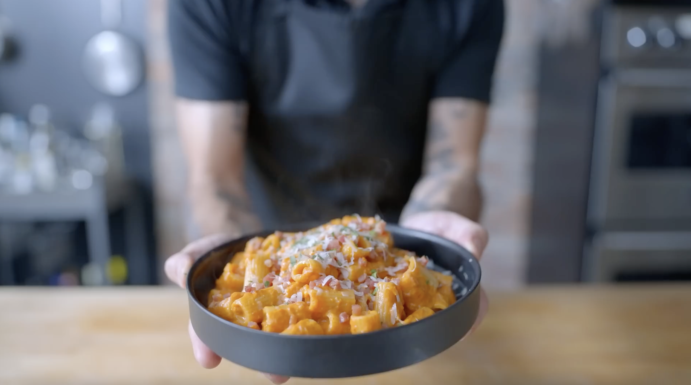

Rigatoni alla Vodka

Description
Vodka pasta is one of those delicious dishes which is faaar greater than the sum of its parts. This is a tough one to beat on any day of the week.
Ingredients
Serves 2
- 8 oz dried penne
- 1 Tbsp kosher salt + more to taste
- 2 Tbsp neutral oil
- ½ yellow onion, diced
- 2 garlic cloves, minced or crushed
- ¼ - ½ tsp crushed red pepper flakes
- 3 oz tomato paste
- 1 oz vodka
- 3 oz heavy cream
- 1 oz parmesan cheese, grated + more to garnish
- To taste freshly ground black pepper
Steps
- Bring a large pot of water to a boil and season with salt. Add the dried pasta and cook until the pasta is about 1 minute shy of al dente.
- Meanwhile, add the oil to a large high-wallet skillet and heat over medium heat.
- Add the onion and cook until translucent, about 3-4 minutes.
- Add the garlic, tomato paste, and red pepper flakes to the skillet and stir to combine. Continue cooking until the tomato paste deepens in color, about 2 minutes.
- Stir in the vodka and heavy cream. Transfer the par-cooked pasta to the sauce. Add reserved pasta cooking water, ¼ cup at a time, as necessary until the sauce is glossy and coating the pasta.
- Turn of the heat and stir in the parmesan cheese. Then, season the pasta to taste with salt and pepper.
- Serve and garnish with more parmesan cheese.